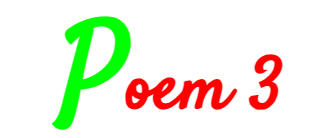

Rating: ★4.5
Autoplay
You are proud as a master poet,
Poetic soul with rhythmical intellect,
Verse and prose comes from you imaginative wit,
Be laud with a prolific languages steal our spirit.
One sadden moment I read your poetry,
Deep with significant messages, got pity with my vocabulary,
What a wonderful legendary poem story created beautifully.
Bravo, hooray! , , , it hooked my heart amazingly,
A mail links popped-up on my search out of the blue,
Seeing with my two eyes rolling and open wide, no it can't be,
Copy paste poetry? ? ? Can't call it your own piece,
Not a genuine poet; with false charade and intelligence.
Copy paste poetry lines from the internet search out,
Words are flowery so as lines are always with doubt,
Lies behind the copy paste poems, it gains distrust,
Craft your poem with honesty and integrity, please do my dear poet.